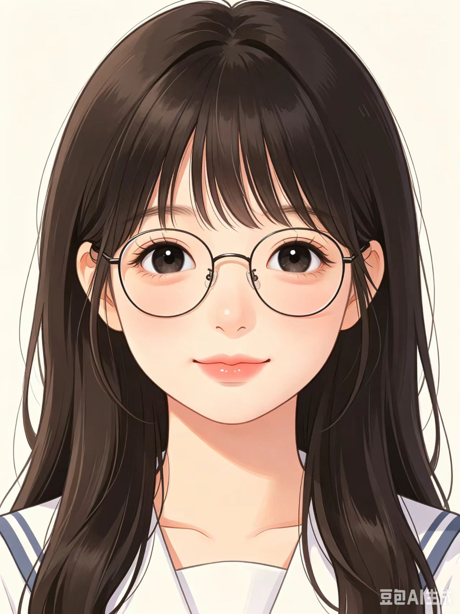

你好！我的名字是李萌。我是一名视觉传达艺术设计（交互设计方向）在读学生。
我兼具平面视觉审美与交互逻辑思维，擅长版式排版、图形创意、视觉配色、界面视觉设计与用户情感体验表达。在创作中既注重画面美感、构图节奏与整体质感，也关注用户行为逻辑、场景需求与交互流畅度。喜欢从生活、潮流与艺术中汲取灵感，敢于尝试多元风格，拒绝固化设计。始终相信好看的视觉能打动人心，好用的交互能贴近生活。不断打磨创意、积累作品，以视觉传递态度，以设计思考体验，在平面艺术与数字交互领域持续探索、稳步成长。
精通版式设计、色彩搭配、字体设计、海报设计、品牌视觉基础设计、文创视觉设计、插画绘制等视觉传达核心技能，具备扎实的平面设计审美与落地能力，能独立完成各类视觉类设计作品的创作与优化
掌握用户需求分析、用户旅程梳理、交互原型搭建、界面交互逻辑设计、UI界面设计、用户体验测试与优化等全流程交互设计方法，熟悉数字产品、移动端界面的交互设计规范与设计逻辑。
视觉设计类：Photoshop、Illustrator、InDesign、Procreate
交互设计类：Figma、Axure、墨刀
辅助工具：基础视频剪辑、思维导图、设计调研工具
在校期间专注视觉传达与交互设计专业学习，多次获评课程优秀设计作品；积极参与校园文创、海报视觉、UI交互原型等设计实践，热爱创意设计与用户体验探索，具备良好审美能力与落地创作能力。